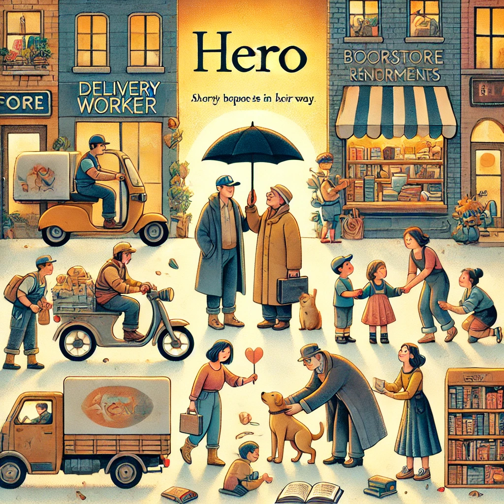

작가
김중혁
출판일
2022년
감상평에 대한 AI그림
안중근 의사의 하얼빈 의거를 새로운 시각에서 그려낸 소설. 독립운동가의 신념뿐만 아니라 인간적인 고민과 갈등이 돋보인다.

감상평에 대한 AI 감정 평가
~~~~AI평가~~~~~
✨ 감탄과 존중: 작품이 단순한 영웅 서사를 넘어서 인간적인 면모까지 조명했다는 점을 높이 평가함
✨ 흥미와 몰입: 기존과 다른 새로운 시각이 흥미로웠다는 느낌이 담김
✨ 깊이 있는 감상: 단순한 감상이 아니라 주제와 인물에 대한 깊은 이해가 반영됨